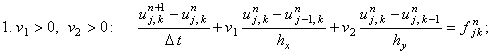
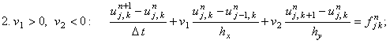
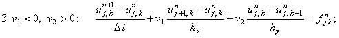
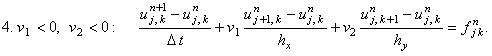

|
1.1. Характеристика.
Запишем двумерное дифференциальное уравнение в частных производных первого порядка
в следующем общем виде:
причём параметры v1 и v2 могут быть как положительными, так и отрицательными.
Напомним, что при исследовании устойчивости разностных схем, аппроксимирующих одномерные дифференциальные
уравнения в частных производных первого порядка, было сформулировано правило выбора конечной разности для
аппроксимации первой производной по координате, согласно которому при положительном значении параметра v,
стоящего перед этой производной, следует использовать левую конечную разность, при
отрицательном v – правую конечную разность (правило применимо только в случае, если рассматриваемая
производная находится в левой части дифференциального уравнения). Кроме этого, для решения разностной
схемы при положительном v потребуется левое граничное условие, при отрицательном v – правое граничное
условие.
Применение правила выбора конечной разности к двумерным дифференциальным уравнениям в частных производных
первого порядка позволяет записать для уравнения (8.1), учитывая различные варианты знаков v1 и v2,
четыре явные разностные схемы, которые с учётом обозначений, введённых при описании разностной сетки
для двумерных задач, имеют вид:
| |
 |
(8.2) |
| |
 |
(8.3) |
| |
 |
(8.4) |
| |
 |
(8.5) |
Учитывая порядок аппроксимации разностных операторов, из которых составлены разностные схемы (8.2)-(8.5),
легко видеть, что каждая из них имеет первый порядок аппроксимации и по времени, и по каждой из координат:
Для решения разностных схем (8.2)-(8.5) требуется правильно задать начальное и граничные условия
(так как при постановке дифференциальной задачи порядок уравнений, описывающих граничные условия,
должен быть ниже порядка самого дифференциального уравнения, при описании методов численного решения
уравнения (8.1) мы будем рассматривать только граничные условия 1-го рода):
|